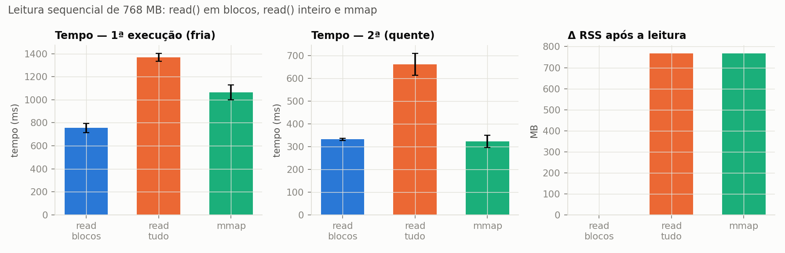
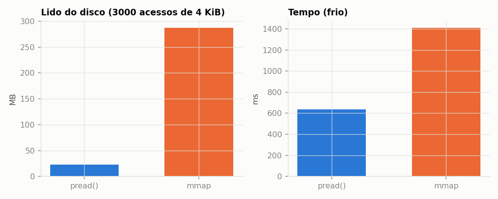
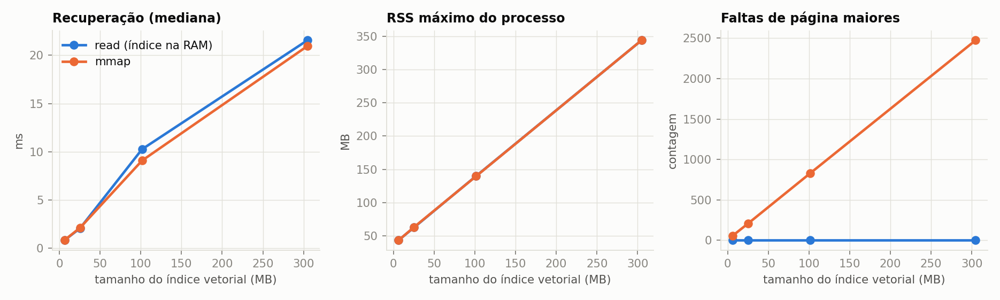
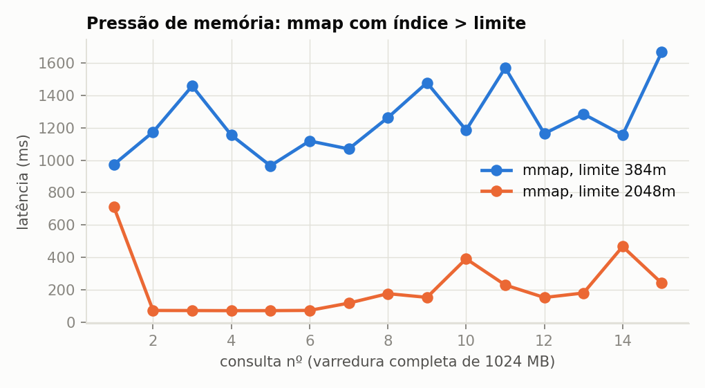
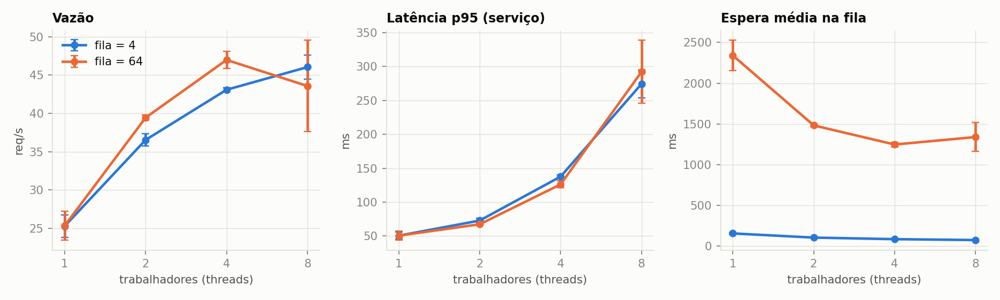
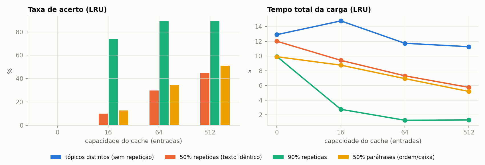
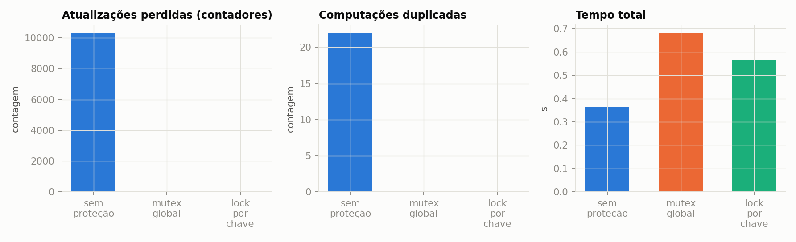

Disciplina: Sistemas Operacionais — 2026.2 | Discente: Leticia Cavalcanti (trabalho individual)
Repositório: https://github.com/leticiacavalcaanti/SO_UFS_2026_2_AV2_Cavalcanti_Leticia | Commit da entrega: 6a4bcad
Vídeo: PREENCHER (ver VIDEO.md) | Data das execuções: 18/10/2026
| Integrante | Contribuição | Participação |
|---|---|---|
| Leticia Cavalcanti | Definição do recorte, implementação do serviço e dos experimentos, execução, análise, relatório, slides e vídeo | 100% |
O uso de IA generativa (assistente de código) na elaboração está declarado em declaracao_uso_ia.md.
Aplicações de IA generativa e de RAG (retrieval-augmented generation) são, do ponto de vista do sistema operacional (SO), cargas que combinam: arquivos grandes lidos do armazenamento (corpus, índices, embeddings, checkpoints), memória virtual (mapeamentos, cache de páginas), filas de requisições e caches compartilhados por várias threads, e escrita concorrente em logs. Este trabalho implementa um serviço simplificado — o GenResearch-Servidor — e o usa como carga para observar como o SO administra esses recursos e que custos aparecem.
Pergunta norteadora: como memória principal, memória virtual, armazenamento, caches, filas compartilhadas e mecanismos de sincronização afetam o desempenho, a estabilidade e a correção de uma aplicação de IA generativa ou de RAG?
Recorte experimental (e justificativa). O foco é o SO, não a qualidade do texto. Por isso: (i) os embeddings são simulados (hashing, determinísticos) e a geração é simulada (latência configurável + CPU proporcional ao contexto) — isso elimina a dependência de chave de API, de pesos de modelo e de GPU, e torna tudo reprodutível; (ii) o corpus é sintético; (iii) o recorte cobre as configurações C1–C6 e a Parte D com as opções 1 (produtor/consumidor) e 2 (cache compartilhado), além de log concorrente e deadlock isolado. A ideia de chunking por palavras com sobreposição e de similaridade de cosseno sobre vetores normalizados vem de um serviço RAG anterior da autora (projeto glpimentor), reescrito aqui sem nenhuma dependência dele.
| Item | Valor |
|---|---|
| Hospedeiro | Windows 11 Home, Docker Desktop 28.3.2 (backend WSL2) |
| Ambiente Linux | Contêiner python:3.12-slim (Debian GNU/Linux 13 "trixie") sobre a VM Linux do Docker Desktop |
| Kernel | 6.6.87.2-microsoft-standard-WSL2 (x86_64) |
| CPU | Intel Core i5-10210U, 4 CPUs lógicas (2 núcleos × 2 threads), 1,6 GHz base |
| RAM / swap | 5,8 GiB / 1,0 GiB (VM); página de 4 KiB |
| Armazenamento | disco virtual da VM (ext4); corpus e índices em volume Docker |
| GPU | nenhuma (somente CPU) |
| Linguagem/bibliotecas | Python 3.12, numpy 2.1.3, matplotlib 3.9.2, SQLite (stdlib) |
| Modelo/ferramenta | nenhum modelo real: vetores e geração simulados (ver §2) |
Comandos executados e saídas completas: results/env/ambiente_container.txt (uname -a, os-release, lscpu, free -h, /proc/meminfo, lsblk, df -h, swapon --show, vmstat, iostat -xz) e results/env/ambiente_host_docker.txt.
MemFree, MemAvailable, cache e swap. MemFree é a RAM totalmente ociosa; MemAvailable é a estimativa do kernel de quanto pode ser dado a novos processos sem swap, incluindo o cache de páginas e slabs reclamáveis; "cache" (Cached) é a memória usada pelo cache de páginas, que guarda conteúdo de arquivos já lidos; swap é o espaço em disco para páginas anônimas expulsas da RAM. O cache de páginas não é memória desperdiçada: é reutilizável (a 2ª leitura de um arquivo evita o disco, como medido em §8) e é devolvido sob pressão — por isso olhar só MemFree leva a conclusões erradas. Para datasets, índices, embeddings e checkpoints, isso significa que ler um arquivo grande uma vez "enche" o cache, que a primeira leitura paga E/S e as seguintes não, e que um arquivo maior que a memória disponível não tem como ficar todo em cache (§8.2).
2 produtores ─put→ BoundedBuffer (semáforos empty/full + mutex) ─get→ N trabalhadores (threads)
trabalhador: cache compartilhado ──miss→ embedding da consulta → varredura do índice (.npy: read ou mmap)
→ textos dos trechos no SQLite → contexto limitado → geração (simulada) → grava no cache
logs de eventos (mutex) · métricas via /proc, getrusage e cgroup v2
genresearch/store.py): lê .txt, fragmenta em trechos de 100 palavras com 20 de sobreposição, gera um vetor float32 de 256 dimensões por trecho e grava vectors.npy (N×256) + meta.sqlite (documento, ordem, texto).np.load) ou mapeado (np.load(mmap_mode="r"), que usa mmap).sleep (latência de um serviço externo, 20 ms) + SHA-256 repetido sobre o contexto (CPU proporcional ao contexto).sleep), o matmul do numpy e o hashlib com buffers grandes liberam o GIL; processos custariam cópia/compartilhamento do índice e IPC para ganho pequeno neste recorte. (A escolha foi testada empiricamente em §9.1, onde se vê o limite do GIL/CPU.)O corpus é gerado por genresearch/corpus.py com semente fixa: 12 tópicos, cada um com vocabulário próprio (70% das palavras de um documento vêm do tópico, 30% do vocabulário global), de modo que consultas de um tópico realmente recuperam trechos dele. Nada é real nem pessoal. Tamanhos usados:
| Documentos | Trechos | Corpus (texto) | vectors.npy |
SQLite |
|---|---|---|---|---|
| 200 (smoke) | 2.600 | 1,6 MB | 2,5 MB | 2,4 MB |
| 500 | 6.500 | ≈ 4 MB | 6,4 MB | — |
| 2.000 (C3, C4, C6) | 26.000 | ≈ 17 MB | 25 MB | — |
| 8.000 | 104.000 | ≈ 68 MB | 102 MB | — |
| 24.000 | 312.000 | ≈ 200 MB | 305 MB | — |
(valores completos em …/stats.json, reproduzidos pelos scripts). Cache compartilhado: LRU ou FIFO, com capacidade configurável, chave canônica da consulta (palavras únicas ordenadas, sem stopwords — paráfrases por reordenação colidem), protegido por mutex; registra acertos, erros, substituições e o tempo economizado (custo de recuperação+geração de cada resposta, somado a cada acerto).
Há um processo Python e, nele: 2 threads produtoras, N trabalhadoras e a thread principal; o numpy cria ainda um pool de threads do OpenBLAS (visto em §10). Recursos compartilhados e seu controle:
| Recurso | Risco sem proteção | Proteção |
|---|---|---|
| Fila de requisições | perda/duplicação, estouro | BoundedBuffer: semáforos empty/full + mutex; número de sequência sob o mutex para verificar FIFO |
| Cache de respostas | atualização perdida, computação duplicada | Lock na estrutura e nos contadores |
| Arquivo de log | linhas intercaladas | Lock em SafeLogger |
| Conexão SQLite | uso de uma conexão por várias threads | uma conexão somente-leitura por thread (threading.local) |
| Índice vetorial | — | somente leitura após a ingestão (sem escrita concorrente) |
Mecanismos adotados: semáforos contadores (empty, full) + mutex para o buffer limitado (Opção 1); mutex global e lock por chave (single-flight) para o cache (Opção 2); mutex no log; ordenação global de locks e acquire com timeout + recuo para o deadlock.
Metodologia. Cada configuração foi repetida 3 vezes; as tabelas trazem média (± desvio-padrão quando relevante). Mesma aplicação e mesmo corpus em cada comparação, salvo a variável explicitamente alterada. Fatores variados: nº de trabalhadores (1, 2, 4, 8), capacidade da fila (4, 64), tamanho do corpus (6 a 305 MB de índice), contexto (500, 2.000, 8.000 B), capacidade (0, 16, 64, 512) e política (LRU/FIFO) do cache, uso de mmap, padrão de leitura (sequencial/aleatório), estado do cache de páginas (frio/quente) e limite de memória (cgroup). Métricas: latência (média, mediana, p95), vazão, RSS/VSZ (/proc/self/status), MemAvailable, faltas de página e bytes lidos do disco (getrusage, /proc/self/io, cgroup), fila (média/máxima/espera), utilização, acertos/erros/substituições, perdas/duplicações. Comandos exatos: README (python scripts/run_all.py). Resultados brutos: results/*.csv; logs: results/logs/; tabelas: results/tabelas_resumo.md.
Estado "frio". Antes de cada execução fria, as páginas do arquivo são despejadas com posix_fadvise(POSIX_FADV_DONTNEED) (não exige privilégio). Vale para o cache de páginas da VM Linux; o disco virtual ainda pode ser cacheado pelo Windows (ver §13).
read() convencional × mmap (Parte E)Arquivo aleatório de 16, 128 e 768 MB; leitura sequencial em blocos de 1 MiB (read em blocos, read do arquivo inteiro para a RAM, mmap) e 3.000 acessos aleatórios de 4 KiB (pread × mmap); 1ª execução (fria) e 2ª (quente). Médias de 3 repetições, arquivo de 768 MB:
| Método / padrão | Cache | Abertura (ms) | Leitura (ms) | ΔRSS (MB) | ΔVSZ (MB) | Faltas maiores | Lido do disco (MB) |
|---|---|---|---|---|---|---|---|
read em blocos, seq. |
fria | 0,005 | 755 | 0 | 0 | 0 | 768 |
read em blocos, seq. |
quente | 0,005 | 331 | 0 | 0 | 0 | 0 |
read tudo, seq. |
fria | 0,005 | 1.369 | 768 | 768 | 0 | 768 |
read tudo, seq. |
quente | 0,012 | 661 | 768 | 768 | 0 | 0 |
mmap, seq. |
fria | 0,021 | 1.064 | 768 | 768 | 6.146 | 768 |
mmap, seq. |
quente | 0,024 | 322 | 768 | 768 | 0 | 0 |
pread 4 KiB, aleatório |
fria | 0,005 | 637 | 0 | 0 | 0 | 23 |
mmap, aleatório |
fria | 0,036 | 1.410 | 165 | 768 | 2.441 | 287 |
pread 4 KiB, aleatório |
quente | 0,007 | 12,8 | 0 | 0 | 0 | 0 |
mmap, aleatório |
quente | 0,029 | 17,6 | 165 | 768 | 0 | 0 |

Figura 1 — Leitura sequencial de 768 MB (média ± desvio-padrão, 3 repetições): tempo frio, tempo quente e ΔRSS.
Observações (todas medidas; as explicações causais são interpretações):
mmap custa ~20–40 µs (mapeia, não lê) contra ~5 µs do open; o VSZ já sobe 768 MB na abertura (espaço de endereços reservado), mas o RSS só cresce quando as páginas são tocadas — VSZ ≠ memória física.read em blocos), 2,1× (read tudo) e 3,3× (mmap) mais rápida e não lê nada do disco (0 MB): é o cache de páginas.read() não gera falta maior (os dados são copiados pelo kernel na chamada de sistema), enquanto o mmap gerou 6.146 faltas maiores na leitura fria sequencial — 768 MB / 6.146 ≈ 125 KiB por falta, compatível com leitura antecipada (readahead) em janelas de ~128 KiB. Na 2ª execução, 0 faltas maiores, mas ~12.288 faltas menores (a tabela de páginas do processo é preenchida a partir do cache).read do arquivo inteiro é o pior caso (2× mais lento que ler em blocos): além da cópia, precisa de 768 MB de memória anônima e ~196.600 faltas menores de primeiro acesso; o RSS fica em 768 MB. Ler em blocos mantém o RSS estável. Isso é o que acontece ao carregar um checkpoint inteiro com read().mmap leu 287 MB do disco para atender 3.000 acessos que somam ~12 MB úteis (12× de amplificação, ~117 KiB por falta), contra 23 MB do pread (2× de amplificação), e foi 2,2× mais lento. Com acesso esparso e frio, mmap não é vantajoso; quente, a diferença cai (17,6 × 12,8 ms).
Figura 2 — Acesso aleatório frio (768 MB): bytes lidos do disco e tempo, `pread` × `mmap`.
(a) Crescimento do corpus e do contexto (1 trabalhador, 150 consultas; cada configuração em processo novo, 1ª leitura fria).
| Docs | Índice (MB) | Recuperação mediana (ms) | RSS máx (MB) | VSZ máx (MB) | Faltas maiores read / mmap |
Lido do disco (MB) |
|---|---|---|---|---|---|---|
| 500 | 6 | 0,8 | 44 | 448 | 0 / 56 | 6 |
| 2.000 | 25 | 2,0 | 63 | 467 | 0 / 209 | 25 |
| 8.000 | 102 | ≈ 9–10 | 140 | 545 | 0 / 830 | 102 |
| 24.000 | 305 | ≈ 21 | 344 | 748 | 0 / 2.474 | 305 |

Figura 3 — Efeito do tamanho do índice (contexto de 2.000 B): recuperação, RSS máximo e faltas maiores.
read e mmap têm RSS e latência de recuperação praticamente iguais em regime estacionário, porque a varredura toca todo o índice e, depois da 1ª consulta, tudo está no cache de páginas. A diferença está no momento do custo: read paga tudo na abertura (e exige RAM anônima do tamanho do índice), mmap paga nas faltas de página durante a 1ª consulta (2.474 faltas maiores ≈ 126 KiB cada).(b) Índice maior que o limite de memória (cgroup, swap do contêiner desligado). Índice sintético de 1.024 MB; 15 consultas, cada uma varrendo todo o índice; docker run --memory=<limite> --memory-swap=<limite>. O cache de páginas do arquivo é despejado antes de cada execução, para que as páginas sejam carregadas — e cobradas — dentro do cgroup do teste.
| Limite | Modo | Resultado (3 de 3 repetições) | Mediana/consulta (ms) | Faltas maiores | Lido do disco |
|---|---|---|---|---|---|
| 2.048 MB | read |
conclui 15/15 | 70–103 | 0 | 1,0 GB |
| 2.048 MB | mmap |
conclui 15/15 | 89–153 | ≈ 8.300 | 1,0 GB |
| 384 MB | read |
morto pelo OOM killer (exit 137) | — | — | — |
| 384 MB | mmap |
conclui 15/15, RSS limitado a ≈ 399 MB | 1.174–1.589 | ≈ 125.000 | ≈ 15,3 GB |

Figura 4 — Latência por consulta com `mmap` e índice de 1 GB: limite de 2 GB (cabe) × 384 MB (não cabe).
read precisa de ~1 GB de memória anônima (não reclamável sem swap) e o kernel mata o processo (C6, "limite de memória"). O mmap mapeia páginas de arquivo (limpas, reclamáveis): o kernel as descarta e relê quando necessário, então o processo sobrevive, mas com thrashing: cada consulta varre 1 GB sequencialmente, o cache (≈ 384 MB) nunca retém o que a próxima varredura precisa (o acesso sequencial cíclico a um conjunto maior que o cache faz a política de substituição falhar quase sempre), e todas as 15 varreduras relêem do disco (15,3 GB ≈ 15 × 1.024 MB). O resultado é ~13–17× mais lento que com 2 GB.--memory-swap igual a --memory) para não pressionar a VM/hospedeiro; a VM tinha ~1 MB de swap em uso em todos os casos. A paginação observada é de arquivo (faltas maiores), não de swap de páginas anônimas. Não foi feita uma execução com swap habilitado.400 consultas distintas (cache desligado), 2 produtores, 2.000 documentos, geração com sleep de 20 ms + CPU (3.000 passes de SHA-256). Média ± desvio-padrão de 3 repetições:
| Fila | Workers | Vazão (req/s) | p95 do serviço (ms) | Espera média na fila (ms) | Fila média / máx |
|---|---|---|---|---|---|
| 4 | 1 | 25,3 ± 1,5 | 51 | 157 | 3,5 / 4 |
| 4 | 2 | 36,5 ± 0,8 | 73 | 106 | 3,3 / 4 |
| 4 | 4 | 43,1 ± 0,2 | 138 | 87 | 3,2 / 4 |
| 4 | 8 | 46,0 ± 1,5 | 274 | 76 | 3,0 / 4 |
| 64 | 1 | 25,4 ± 1,9 | 51 | 2.341 | 58,5 / 64 |
| 64 | 2 | 39,4 ± 0,3 | 67 | 1.483 | 58,3 / 64 |
| 64 | 4 | 47,0 ± 1,1 | 126 | 1.248 | 58,2 / 64 |
| 64 | 8 | 43,6 ± 6,0 | 292 | 1.340 | 58,0 / 64 |

Figura 5 — Vazão, latência p95 do serviço e espera na fila × número de trabalhadores, para filas de 4 e de 64.
empty) em vez de acumular memória sem limite (RSS 114–388 MB).ps -L (§10) viram-se 3 threads com ~82% de CPU e quase nenhuma troca voluntária — compatível com o pool do OpenBLAS (numpy) em espera ativa. Repetindo C3 (fila 64) com OPENBLAS_NUM_THREADS=1: 29,4 ± 0,5 (1 worker), 43,8 ± 1,4 (2), 41,9 ± 6,3 (4) e 45,9 ± 16,0 (8) req/s (results/c3_openblas1.csv). Ou seja, ≈ +10–15% com 1–2 workers, mas a saturação acima de 2 workers persiste; logo o OpenBLAS explica só uma parte e não identificamos a causa total (GIL, núcleos físicos, ruído do hospedeiro). A variância alta com 4–8 workers indica ruído do ambiente.400 requisições, 2 workers, mesma carga de CPU. Cenários: consultas todas distintas (tópicos/palavras diferentes), 50% e 90% de repetições de texto idêntico, e 50% de paráfrases (mesma consulta com ordem/caixa alteradas — a chave canônica trata como igual).
| Cenário | Cache (LRU) | Acerto | Erros (miss) | Substituições | Tempo economizado | Tempo total |
|---|---|---|---|---|---|---|
| distintas | 512 | 0% | 400 | 0 | 0 s | 11,3 ± 1,0 s |
| repetidas 50% | 0 | 0% | 400 | 0 | 0 s | 12,0 ± 0,8 s |
| repetidas 50% | 512 | 44,7% | 221 | 0 | 9,3 s | 5,7 ± 0,05 s |
| repetidas 90% | 0 | 0% | 400 | 0 | 0 s | 9,9 ± 0,2 s |
| repetidas 90% | 16 | 74,0% | 104 | 70 | 16,2 s | 2,7 s |
| repetidas 90% | 64 | 89,2% | 43 | 0 | 19,2 s | 1,25 ± 0,14 s |
| paráfrase 50% | 512 | 50,9% | 196 | 0 | 10,9 s | 5,2 ± 0,2 s |

Figura 6 — Taxa de acerto e tempo total × capacidade do cache, por cenário (LRU).
| Cenário | Resultado (média de 3) |
|---|---|
| Arquivo/índice ausente | 40 requisições → 40 erros controlados, 80 retentativas (2 por requisição), processo não caiu, 0,6 s |
| Índice indisponível por 0,6 s e depois restaurado | 120/120 concluídas com sucesso após retentativas com recuo; 2,2 s |
| Fila saturada, produtor com timeout (rejeita) | 8 concluídas, 112 rejeitadas (93%) e registradas; 0 perdas silenciosas |
| Fila saturada, produtor bloqueia (sem timeout) | 120/120 concluídas, 4,0 s (backpressure) |
| Serviço externo falhando em 30%, sem retentativa | 79 ok, 41 erros (34%) |
| Idem, com até 3 retentativas | 119 ok, 1 erro, 55 retentativas; 1,8 s (≈ +88% de tempo) |
| Limite de memória | §8.2(b): read morto por OOM (exit 137, 3/3); mmap sobrevive com thrashing |
Trade-off: rejeitar protege a latência e a memória, mas perde trabalho (exige que o cliente trate o erro); bloquear não perde nada, mas empurra a espera para o produtor. Retentativas convertem falhas transitórias em sucesso ao custo de tempo extra; falhas permanentes (arquivo ausente) apenas multiplicam o custo se o limite de tentativas for alto.
As janelas de corrida foram ampliadas de propósito (time.sleep(0) entre leitura e escrita e sys.setswitchinterval(1e-6)): é injeção de falha controlada; em condições normais a corrida existiria, mas seria bem mais rara.
D1 — cache compartilhado (8 threads × 1.500 operações, 40 chaves).
| Modo | Atualizações perdidas | Computações (ideal = 40) | Duplicadas | Tempo (s) |
|---|---|---|---|---|
| Sem proteção | 10.334 de 12.000 (86%) | 62 | 22 | 0,36 |
| Mutex global | 0 | 40 | 0 | 0,68 |
| Lock por chave (single-flight) | 0 | 40 | 0 | 0,56 |

Figura 7 — Cache sem proteção × mutex global × lock por chave.
Sem proteção, o contador hits += 1 (ler–somar–escrever) perde atualizações e duas threads calculam a mesma chave (cache stampede). O mutex global corrige, mas serializa também a computação cara (0,68 s); o lock por chave mantém a correção e reduz o tempo em ~18% porque chaves diferentes computam em paralelo — ao custo de mais código e de um mapa de locks. A versão sem proteção é "mais rápida" só porque está errada.
D2 — log concorrente. UnsafeLogger (linha escrita em três partes, sem lock): em 2.400 eventos, 1.817 linhas (76%) corrompidas (mistura de partes de eventos diferentes); SafeLogger (mutex): 0. O mutex custa a serialização da escrita (aceitável aqui, pois o log é pequeno e em buffer).
D3 — produtor/consumidor com buffer limitado. 3 produtores × 500 itens, 2 consumidores, capacidades 1, 4 e 64: 0 perdidos, 0 duplicados, 0 violações de FIFO em todas as 18 execuções. Com consumidor lento, o produtor ficou bloqueado ≈ 1,2 s no total e a ocupação máxima igualou a capacidade (backpressure); com produtor lento, os consumidores esperaram ≈ 1,0 s (semáforo full) e a ocupação máxima ficou em ≤ 3. A capacidade só altera onde a espera acontece, não a correção.
D4 — deadlock (espera circular) em processo isolado. Duas threads pegam dois locks em ordem oposta (A→B, B→A). Em 3/3 repetições o subprocesso não terminou; após 3 s o processo pai o classificou como deadlock, registrou o estado das threads e o encerrou (kill). Em /proc/<pid>/task/*/wchan, as threads estavam em S (sleeping) aguardando futex_wait_queue (esperando um lock que nunca será liberado). Correções testadas: ordenação global de locks (ambas as threads pegam A antes de B → 0,30 s, sem deadlock) e acquire com timeout + recuo assimétrico (desiste, libera o primeiro lock e tenta de novo → 0,60 s). Trade-off: a ordenação exige disciplina em todo o código; o timeout adiciona latência e a necessidade de recuo para evitar livelock. Não demonstramos starvation.
Evidências de SO (results/evidence/): ps -L, /proc/<pid>/status, trocas de contexto por thread, pidstat -t, vmstat, iostat, smaps_rollup, strace -c -f. Com 4 trabalhadores + 2 produtores: 11 threads no processo; 3 threads em estado Rl com ≈ 82% de CPU e quase nenhuma troca voluntária (compatível com espera ativa do OpenBLAS — hipótese testada parcialmente em §9.1); as demais em futex_wait_queue. No strace -c -f do pipeline, futex respondeu por 70% do tempo em chamadas de sistema (3.919 chamadas) — o custo de sincronização entre threads —, seguido de clock_nanosleep (16%, a geração simulada). O strace de read × mmap mostra, para o mesmo arquivo de 16 MB, uma sequência de read(3, …, 1048576) no primeiro caso e um único mmap(NULL, 16777216, PROT_READ, MAP_SHARED, 3, 0) no segundo — a leitura passa a ocorrer por faltas de página, invisíveis ao strace.
read() exige memória anônima do tamanho do arquivo (e OOM se não couber); mmap evita essa cópia e a reserva, funciona acima da RAM, mas vira thrashing se o conjunto de trabalho não cabe no cache — como numa varredura completa de índice vetorial a cada consulta. A segunda leitura é rápida pelo cache de páginas; por isso o primeiro token (carga fria) é bem mais lento que os seguintes.read × mmap: §8.1 — mmap abre mais rápido? não (20–40 µs × 5 µs) mas não lê; é melhor que read do arquivo inteiro, pior que read em blocos na leitura fria sequencial e pior em acesso aleatório frio (287 × 23 MB lidos).empty/full para sincronização de eventos da fila (§6).sleep + hash. Resultados sobre CPU/GIL não se transferem a modelos grandes, múltiplas GPUs ou ambientes distribuídos, onde dominam transferência host↔dispositivo, memória da GPU, comunicação entre nós e checkpoints de dezenas de GB.O serviço implementado e medido mostrou, com evidências reprodutíveis, que: (i) o cache de páginas explica a diferença entre 1ª e 2ª leitura e que carregar tudo com read() é o caminho mais caro em memória; (ii) mmap troca RAM anônima por paginação sob demanda — permite operar um índice (1 GB) maior que o limite de memória (384 MB) onde read é morto pelo OOM, ao custo de thrashing (~15× mais lento, 15 GB lidos); (iii) mais threads não significam mais vazão — há saturação em 2–4 workers e piora do p95 com 8 —, e filas grandes viram latência, não vazão; (iv) um cache compartilhado só compensa com repetição, mas então reduz o tempo em até ~8×; e (v) sem exclusão mútua o cache e o log ficam incorretos (86% de atualizações perdidas, 76% de linhas corrompidas) e a ordem de aquisição de locks pode produzir deadlock, evitável por ordenação global ou timeouts, cada um com seu custo. Tudo isso é fruto de decisões do sistema operacional — memória virtual, cache de páginas, escalonamento e primitivas de sincronização — que uma aplicação de IA generativa herda.
man 2 mmap, man 2 posix_fadvise, man 5 proc (/proc/meminfo, /proc/<pid>/io, /proc/<pid>/status), man 2 getrusage, man 7 cgroups e documentação do cgroup v2 (memory.max, memory.events, memory.stat).threading, mmap, sqlite3) e do numpy (numpy.load com mmap_mode).